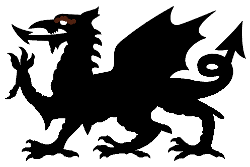

Level 75 reference · Zenith rules
|
Job: Dark Knight Notorious Monster |
| Zone | Level | Drops | Steal | Spawns |
Notes |
|---|---|---|---|---|---|
|
1 |
A, T(H), T(S) | ||||
|
HP = Detects Low HP; M = Detects Magic; Sc = Follows by Scent; T(S) = True-sight; T(H) = True-hearing JA = Detects job abilities; WS = Detects weaponskills; Z(D) = Asleep in Daytime; Z(N) = Asleep at Nighttime | |||||

Notes:
- Nocturnal Servitude: Conal Charm and turns target into a bat. Can be bound or slept with Lullaby, Sheep Song, or Yawn.
- Wings of Gehenna: AoE damage (~300-400), goes through and removes shadows, causes knockback and stun
- Decollation: Physical damage (~150), probably cone attack, possible AoE
- Bloodrake: Single target large HP drain. (~400 on a PLD.) Absorbed by 3 shadows.
- Heliovoid: AoE status effect drain; takes 1 buff from all people affected
- Eternal Damnation: Gaze Doom
- Having your back turned if he's facing you makes this move have no effect on you
- Nosferatu's Kiss: AoE drain (~300), some TP drain, spawns a Cursed Doppelganger
- Cursed Doppelganger is a copy of the player Count Dracula targets.
 Image source | This article about a Notorious Monster is a stub. You can help by expanding it. |


Adapted from Eden Wiki: Count Dracula · Contributors and history · CC BY-SA 4.0. Revision 24062. Layout, links and optional background text adapted for Zenith.